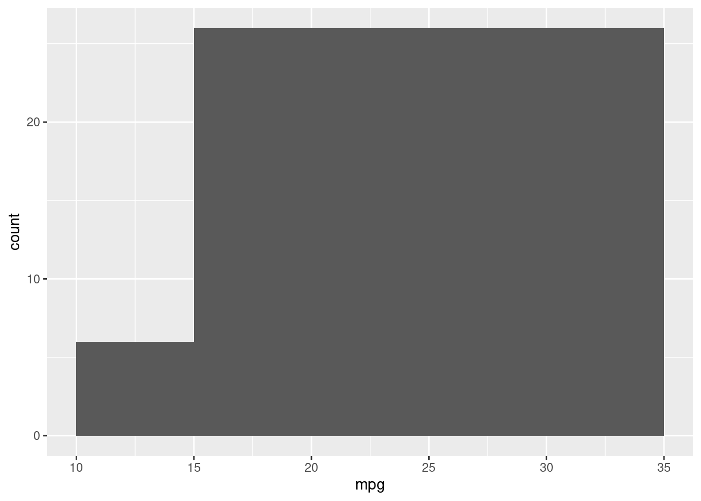
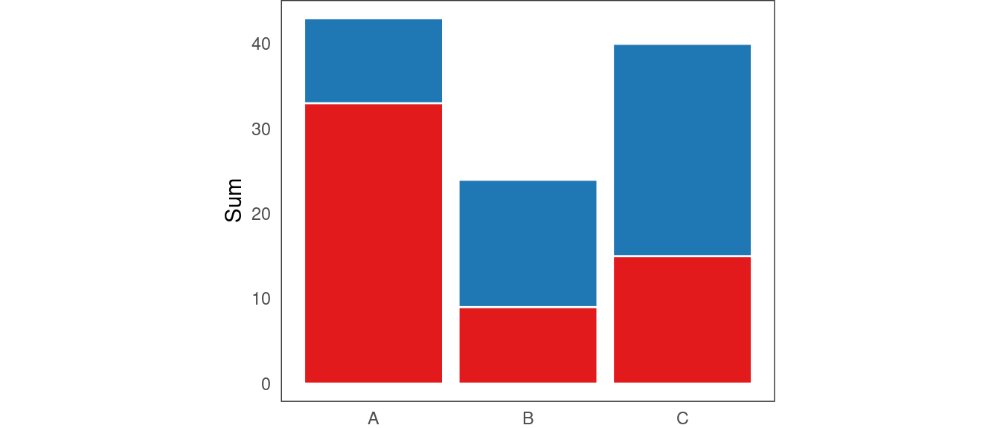

3 Design
3.0.1 User profile
The profile of average user can also differ significantly, across systems and research areas. For example, some areas of interactive data visualization and HCI make no assumptions about the user’s level of experience or motivation, whereas others assume a highly motivated “expert” user with a sufficient level of domain knowledge (Dimara and Perin 2019).
While designing my system, I have attempted to
3.1 Implementation
The example code chunks in this section are written in both R and TypeScript. The reason for this is that, while I would prefer to use R for everything due to its tight integration with RMarkdown, some of the concepts are much easier to explain in a language with static typing features like TypeScript (particularly, type annotations and interfaces). However, since the examples relate to plotting and some can be improved by showing graphical output/plots, I also wanted to use (base) R for plotting. So, where graphical output is important, the code chunks are written in R, and, where the code itself is the main focus, they are written in TypeScript. I hope this bilingualism is not too confusing and have tried to use only the basic features of each language to make the examples clear.
3.1.1 Programming paradigms
It is often the case that the same programming task can be solved in many, often vastly different, ways. Programs solving the same problem can differ in how they decompose the problem, how they represent and manipulate data, how they handle state, how explicit or implicit they are about handling low-level system details versus relying on abstractions, how they structure and organize their constituent components, and so on. Dealing with these concerns, and coming up with a formal set of principles for addressing them is the job of programming paradigms (Chambers 2014; Jordan et al. 2015; Van Roy et al. 2009).
Most programming languages are geared towards one specific style of programming, typically supporting only one or two programming paradigms to a reasonable capacity (Van Roy et al. 2009). Fortunately, this is not the case for either JavaScript/TypeScript or R, since both are multiparadigm programming languages (Chambers 2014; MDN 2024f). Both support object-oriented programming, via prototype inheritance in the case of JavaScript (MDN 2024b) and the S3, S4, and R6 systems in the case of R (Wickham 2019), and treat functions as first class citizens, allowing for functional programming style (Chambers 2014; MDN 2024d). Further, as C based languages, both also support classical imperative/procedural programming style, and also provide some utilities for reflective metaprogramming.
The flexibility of JavaScript and R allowed me to experiment with different programming paradigms while developing plotscaper. I had rewritten the JavaScript side of the package multiple times from scratch, testing out several different programming paradigms and styles in the process. Below, I provide a very broad overview of the paradigms I have tried, as well as an account of my experience of using each paradigm and some thoughts on its suitability towards designing interactive data visualization systems.
3.1.1.1 Imperative programming
Imperative programming style is one of the oldest and most classical styles of programming. It conceptualizes the program as a discrete sequence of steps that manipulate some mutable state (Frame and Coffey 2014). In this way, it closely resembles the way CPU executes instructions.
3.1.1.2 Data oriented programming
Data oriented programming (DOP) and data oriented design (DOD) are two newer programming paradigms that have been slowly gaining prominence in the recent years. While the terms are sometimes used interchangeably, there are some subtle differences: DOP focuses more on high-level principles such as structuring and organizing code, whereas DOD, originating in the world of video-game development, tends to be more concerned with low-level optimization details such as memory layout and CPU access patterns (Sharvit 2022; c.f. Acton 2014; Fabian 2018). However, there is a remarkable overlap between the conclusions and high-level concepts of the two programming paradigms. For this reason, I will discuss both here simultaneously and refer to both as “DOP” unless explicitly mentioned otherwise.
The core idea of DOP is a data-first perspective. Under this view, programs should be viewed as transformations of data, nothing less, nothing more. As a result, every program is composed of two sets of components: stateful data and stateless functions that transform this data (Fabian 2018). Data should be represented by generic data structures, formed by combining maps/structs, arrays, and primitives (for example JSON; Sharvit 2022), and it may even be desirable that it adheres to the relational model (Codd 1970; Moseley and Marks 2006; Fabian 2018; note that the data does not actually have to live inside a relational database, just have the shape of a normalized table, with columns represented by generic arrays). Data and code should be kept separate, with code living in separate modules, composed of stateless functions (Fabian 2018; Sharvit 2022). Further, since data is just itself - data - there is no obligation for it to model the real world or any kind of abstract entity and we are free to represent it in any way we want (Acton 2014; Fabian 2018; an extreme example of this are Entity Component Systems in videogames, Härkönen 2019). Finally, abstraction should be introduced only gradually, and most of the work should be done by generic data manipulation functions (Fabian 2018; Sharvit 2022).
It may seem that many of the DOP principles directly contradict many popular OOP principles, specifically encapsulation, inheritance, polymorphism, and domain driven design. However, many of these principles can either be reconciled with DOP, or DOP in fact provides better alternatives. Below, I go over these principles and provide code examples that further illustrate how DOP works.
3.1.1.2.1 Encapsulation
When it comes to encapsulation in DOP, we have to differentiate between encapsulating data and encapsulating code. Encapsulating code is easy in DOP - we can simply not export certain functions from the code modules. We are then free to modify the signature of these functions without affecting the public interface (Fabian 2018). Encapsulating data may require a bit more work. Depending on the language, generic data structures may not have property access modifiers (although there does seem to be a trend in recent languages to support property access modifiers more generically, see e.g. Rust Foundation 2024; Zig Software Foundation 2024). For instance, in JavaScript, private properties can only be declared as part of a class declaration (MDN 2024d). However, in most languages, it is still possible to use other language features and metaprogramming to achieve data encapsulation - for example, in JavaScript, we can use the Proxy class to emulate private property access (see Appendix).
Thus, encapsulation of data is certainly possible in DOP. However, a question still remains whether it is a good idea. Encapsulation is generally seen as a net positive in OOP, however, in the DOP view, data encapsulation presents trade-offs. While it may provide an additional layer of security, it also makes systems more complex and harder to debug (Fabian 2018; Sharvit 2022). , And, even with fully encapsulated data, users may still come to rely on hidden features of the system (Fabian 2018). Ultimately, it is necessary to weigh the pros and cons of encapsulating data within the context of the specific use-case.
In JavaScript, there is also a third option which I actually found to be a good fit while writing plotscape, and that is a weak form of encapsulation by using symbol keys (MDN 2024c). Symbols are builtin primitive that are guaranteed to be unique. By not exporting the symbol value, we can make a property weakly encapsulated in the sense that the user will not be able to access it without using reflection. For example:
// Meta.ts
const METADATA = Symbol("metadata");
type METADATA = typeof METADATA;
export interface Meta<T extends Record<string, any> = any> {
[METADATA]: T;
}
export namespace Meta {
export function of<T extends Object>(object: T) {
return { ...object, [METADATA]: {} };
}
export function get<T extends Meta>(object: T, key: keyof T[METADATA]) {
return object[METADATA][key];
}
export function set<T extends Meta, K extends keyof T[METADATA]>(
object: T,
key: K,
value: T[METADATA][K]
) {
object[METADATA][key] = value;
}
}Now we can import the module and use it to add secret metadata to arbitrary data objects:
import { Meta } from "./Meta.ts"
interface User extends Meta<{ id: number }> {
name: string;
}
const user: User = Meta.of({ name: "Adam" });
Meta.set(user, `id`, 1337);
console.log(Meta.get(user, `id`));
interface Variable extends Array<number>, Meta<{ min: number; max: number }> {}
const values: Variable = Meta.of([1, 2, 3]);
Meta.set(values, `min`, 0);
console.log(Meta.get(values, `min`));## 1337
## 0The user can access and set the metadata values using the Meta.get and Meta.set functions, however, they cannot directly access the metadata property since the value METADATA symbol is not exported. There is a way to access this symbol via the Reflect.ownKeys and Object.getOwnPropertySymbols functions, and so this is not a strong form of encapsulation (MDN 2024c). However, arguably, if the user goes as far as to use these functions, and, assuming we are not storing any sensitive data (which is generally not the case in interactive data visualization), it may be reasonable to allow them to access these “private” values and suffer the consequences.
3.1.1.2.2 Inheritance
In OOP, the primary mechanism for code reuse is inheritance.
In DOP, since data is generic and separate from behavior, we can call functions from any module as long as the data we provide it as arguments adheres to the module’s interface. This makes code reuse trivial. For example, here’s a simplified version of the Reactive interface (Observer pattern) from plotscape:
const LISTENERS = Symbol(`listeners`); // A unique symbol, to avoid namespace clashes
type Dict = Record<string, any>; // Generic dictionary type
type Callback = (data: Dict) => void; // Generic callback function type
interface Reactive {
[LISTENERS]: Record<string, Callback[]>;
}
namespace Reactive {
export function of<T extends Object>(object: T): T & Reactive {
return { ...object, [LISTENERS]: {} };
}
export function listen(object: Reactive, event: string, cb: Callback) {
if (!object[LISTENERS][event]) object[LISTENERS][event] = [];
object[LISTENERS][event].push(cb);
}
export function dispatch(object: Reactive, event: string, data: Dict) {
for (const cb of object[LISTENERS][event] ?? []) cb(data);
}
}
interface Dog extends Reactive {
name: string
}
namespace Dog {
export function of(name: string) {
return Reactive.of({ name })
}
}
const dog = Dog.of(`Terry`)
Reactive.listen(dog, `car goes by`, () => console.log(`Woof!`))
Reactive.dispatch(dog, `car goes by`)## Woof!3.2 System components
3.2.1 Factors
Factors provide a way to partition the data into multiple disjoint parts.
3.2.1.1 Product factors
We can combine a factor with \(j\) levels and another factor with \(k\) levels into a product factor with up to \(j \cdot k\) levels.
I independently discovered a formula similar to (Wickham 2013):
\[i_{\text{product}} = i_1 + i_2 \cdot \max(j, k)\]
3.2.2 Reducers
(Gray et al. 1997) came up with OLAP data cube
3.2.3 Scales
To visualize data, we need to be able to translate values from the space of the data to space of the graphical device (computer screen). In most data visualization systems, this is done by specialized components called scales. While there exists is a fair amount of literature on the theoretical properties of scales [SEE INTRODUCTION], much less is written about the actual details of implementing scales in concrete data visualization systems. As such, the following section is based largely on how scales have been implemented in other data visualization codebases, such as the ggplot2 R package (Wickham 2016) or d3-scale module of D3 (Observable 2024), as well on personal insights while implementing the package.
3.2.3.1 Overview
From a high-level perspective, a scale is just a function \(s: D \to V\) which translates values of the data \(d \in D\) to values of some visual attribute \(v \in V\), such as the x- and y-position, length, area, radius, or color. This function may or may not be invertible, such that each value of the visual attribute can but does not have to be identified with a unique data value.
One of the most common and typical cases is where both \(D\) and \(V\) are subsets of the real numbers:
\[s: [d_{min}, d_{max}] \to [v_{min}, v_{max}] \qquad d_{min}, d_{max}, v_{min}, v_{max} \in \mathbb{R}\]
For example, suppose our data takes values in the range from 1 to 10 and we want to plot it along the x-axis, within a 800 pixels wide plotting region. Then, our scale is simply:
\[s_x: [1, 10] \to [0, 800]\]
Now, there is an infinite number of functions that fit this signature. However, one particularly nice and simple candidate is the following function:
Definition 3.1 (Simple scale function) \[s(d) = v_{max} + \frac{d - d_{min}}{d_{max} - d_{min}} \cdot (v_{max} - v_{min})\]
if we substitute the concrete values into the formula, this becomes:
\[s_x(d) = 0 + \frac{d - 1}{10 - 1} \cdot (800 - 0) = [(d - 1) / 9] \cdot 800\]
The function is a simple linear map, which acts on the data in the following way:
- \(s_x(1) = (1 - 1) / 9 \cdot 800 = 0\)
- \(s_x(10) = (10 - 1) / 9 \cdot 800 = 800\)
- \(s_x(d) \in (0, 800)\) for any \(d \in (1, 10)\)
That is, the function maps the data value 1 to pixel 0 (left border of the plotting region), value 10 to to pixel 800 (right border of the plotting region), and any value in between 1 and 10 inside the interval 0 to 800, proportionally to where in the data range it is located.
It is relatively simple to translate the formula in 3.1 to code:
// simpleScale.ts
export function simpleScale(
d: number,
dmin: number,
dmax: number,
vmin: number,
vmax: number,
): number {
return vmin + ((d - dmin) / (dmax - dmin)) * (vmax - vmin);
}And indeed, this function works the way we would expect:
import { simpleScale } from "./simpleScale.ts"
console.log(simpleScale(1, 1, 10, 0, 800))
console.log(simpleScale(5.5, 1, 10, 0, 800))
console.log(simpleScale(10, 1, 10, 0, 800))## 0
## 400
## 8003.2.3.2 The limits of modeling scales as simple functions
Simple scale functions like the one above can work fine for basic data visualization systems. However, once we begin adding more features, this design can become prohibitive. Consider, for example, what happens if we want to:
- Expand the scale limits
- Apply non-linear transformations
- Pan, zoom, reverse, or otherwise modify the scales interactively
- Scale discrete data
Let’s take the first point as a motivating example. Consider what happens to data points at the limits of the data range:
x <- 1:10
y <- rnorm(10, 0, 5)
col <- ifelse(1:10 %in% c(1, 10), "indianred", "grey80")
plot(x, y, col = col, cex = 3, xaxs = "i")
The plot above shows values scaled using the simple linear mapping described above along the x-axis, i.e. \(s: [1, 10] \to [0, 800]\). Notice that, since the position of the points representing the values 1 and 10 get mapped to pixel values 0 and 800 (the left and right border of the plot), resulting in only half of each point being visible.
To address this, most data visualization systems automatically expand the range of the domain by some pre-specified percentage:
# By default, the plot() function automatically expands the x- and y-axis
# scale limits by approximately 4% on each end, see `xaxs` in ?graphics::par
plot(x, y, col = col, cex = 3)
We could achieve similar effect by modifying the scale function and adding an additional argument:
// simpleScale2.ts
export function simpleScale2(
d: number,
dmin: number,
dmax: number,
vmin: number,
vmax: number,
exp: number,
): number {
return (
vmin + (exp / 2 + ((d - dmin) / (dmax - dmin)) * (1 - exp)) * (vmax - vmin)
);
}Now, if we set the exp argument to some positive value, the scaled values get mapped closer to the center of the plotting region. For example, setting exp to 0.1 moves each of the data limits 5% closer to the center of the plotting region:
import { simpleScale2 } from "./simpleScale2.ts"
console.log(simpleScale2(1, 1, 10, 0, 800, 0.1));
console.log(simpleScale2(5.5, 1, 10, 0, 800, 0.1));
console.log(simpleScale2(10, 1, 10, 0, 800, 0.1));## 40
## 400
## 760However, with many additional arguments, the function can quickly become unwieldy. The logic inside the function’s body gets more complicated, and if we have to call the function in multiple places in our code, it may become difficult to remember the order and identity of the arguments. Further, we may want to persist or modify some of the arguments during runtime (such as when panning or zooming). Therefore, a more structured approach is needed.
3.2.3.3 Solution: Two-component scale system
The linear mapping formula can guide us in decomposing the scaling function into smaller, more manageable parts. By looking at the formula closely, we may be able to see that it can be expressed as the composition of two simpler functions:
Definition 3.2 (Two-component scale system) \[s(d) = \color{steelblue}{v_{min} +} \color{indianred}{\frac{d - d_{min}}{d_{max} - d_{min}}} \color{steelblue}{\cdot (v_{max} - v_{min})}\]
where we can interpret \(s\) as being composed of:
- A normalize function \(\color{indianred}{n: D \to [0, 1], \qquad n(d) = (d - d_{min}) / (d_{max} - d_{min})}\)
- An unnormalize function \(\color{steelblue}{u: [0, 1] \to V, \qquad u(p) = v_{min} + p \cdot (v_{max} - v_{min})}\)
Such that:
\[s(d) = \color{steelblue}{u(} \color{indianred}{n(\color{black}{d})} \color{steelblue}{)}\]
Put simply, the normalize function \(n\) translates data values \(d \in D\) to a percentage \(p \in [0, 1]\), and the unnormalize function \(u\) converts the percentage to the space of the visual attribute \(V\).
In code, we can write this as follows:
function normalize(d: number, dmin: number, dmax: number) {
return (d - dmin) / (dmax - dmin)
}
function unnormalize(p: number, vmin: number, vmax: number) {
return vmin + p * (vmax - vmin)
}
console.log(normalize(5.5, 1, 10))
console.log(unnormalize(0.5, 0, 800))
console.log(unnormalize(normalize(5.5, 1, 10), 0, 800))## 0.5
## 400
## 400This two component system allows for a clean separation of concerns. Specifically, the normalize function only needs to know how to map the data values to \([0, 1]\). It does not need to be aware of where these normalized data values will be mapped to. Conversely, the unnormalize function only needs to understand how to translate values from \([0, 1]\) to the space of the visual attribute (such as x-axis position).
It is worth noting that there is nothing inherently special about the interval \([0, 1]\) as the intermediate domain: any finite subset of \(\mathbb{R}\) would do. However, the interval \([0, 1]\) is convenient, both in terms of interpretation as well as for implementation, as will be discussed later.
Finally, so far I have discussed scales as functions: the scale function, the normalize function, and unnormalize function. Framing scales as composition of functions leads to a nice correspondence between the mathematical definition and the code implementation. However, in practice, it may be more convenient to implement the domain and codomain as objects or classes, as we will see in the following section. The important point is that, no matter what type the two components are, each is responsible for translating values from/to its domain and the interval \([0, 1]\).
3.2.3.4 Past implementations of scales
Implementing scales as composition of two components is fairly standard practice across data visualization packages. For example, the D3 library (Michael Bostock, Ogievetsky, and Heer 2011) implements scales in a functional style, with the values representing the data domain and the visual (co)domain being provided as tuples or arrays of values, either during initialization or at some later point. For illustration, here is an example from the oficial documentation (Observable 2024):
const x = d3.scaleLinear([10, 130], [0, 960]);
x(20); // 80
const color = d3.scaleLinear([10, 100], ["brown", "steelblue"]);
color(20); // "rgb(154, 52, 57)"
// The domain and codomain can also be specified separately
const y = d3.scaleLinear().domain([10, 130]); Internally, D3 uses specialized functions to translate from the domain to the codomain (such as the normalize() and scale() functions for continuous and discrete/ordinal domains, respectively, and various interpolate() functions for codomains).
Similarly, in ggplot2 (Wickham 2016), scales are built upon the Scale class, with each subtype implementing limits and palette properties. Similar to D3, the limits property is a vector which corresponds to the data domain and the palette property is a function which corresponds roughly to the visual codomain (the x- and y-position behave slightly differently, due to being passed through coordinate systems). Internally, the package uses the rescale function from the scales package (Wickham, Pedersen, and Seidel 2023) to map data values to \([0, 1]\) and then the palette function is responsible for mapping these normalized values to the visual attribute. For illustration, here’s the full definition of the map method on the ScaleContinuous class (I’ve added comments for clarity):
map = function(self, x, limits = self$get_limits()) {
# Limits are just a tuple, rescale maps x to [0, 1]
x <- self$rescale(self$oob(x, range = limits), limits)
uniq <- unique0(x)
# Palette is a function which returns a vector of attribute values
pal <- self$palette(uniq)
scaled <- pal[match(x, uniq)]
ifelse(!is.na(scaled), scaled, self$na.value)
}3.2.3.5 Proposed model of scales
One feature that the models of scales that D3 and ggplot2 rely on is that they both treat the data domain and the visual attribute codomain as different types. In D3, fundamentally different functions are used to translate from \(D \to [0, 1]\) and from \([0, 1] \to V\), and, in ggplot2, limits is a simple vector/tuple whereas palette is a function. While this approach may have some benefits, offering greater flexibility, it also does add additional complexity. Specifically, we have to use one mental model when considering the domain and another when considering the codomain. Further, this model of scales only works in one direction: mapping values \(D \to V\). For going the the other way, i.e. mapping \(V \to D\), other specialized functions have to be used.
I propose a model of scales which implements both the domain and the codomain as objects of the same type: Expanse. Fundamentally, this makes it so that the only difference between the data domain and the visual attribute codomain is which property of the scale they are assigned to. I argue that this model has several benefits, including making the code easier to reason about, as well as providing a simple interface for inverting values from \(V \to D\).
Here is a (slightly) simplified version of the Scale interface:
D represents the type of the data domain, and V represents the type of the visual attribute codomain.
The main nuts and bolts of the Scale interface are the following two functions:
function pushforward<D, D>(scale: Scale<D, V>, value: D): V
function pullback<D, V>(scale: Scale<D, V>, value: V): DThe pushforward function pushes values forward through the scale, first through its domain and then its codomain, and the pullback function pulls values back, first through its codomain and then through its domain. For clarity, here is a simplified implementation:
function pushforward<D, V>(scale: Scale<D, V>, value: D): V {
return Expanse.unnormalize(scale.codomain, Expanse.normalize(scale.domain, value))
}
function pullback<D, V>(scale: Scale<D, V>, value: V): D {
return Expanse.unnormalize(scale.domain, Expanse.normalize(scale.codomain, value))
}In plain words, most of the work is done using the two Expanse objects: we use domain to translates \(D \to [0, 1]\) and codomain to translate \([0, 1] \to V\). Scale serves as a plumbing, connecting these two expanses together.
However, before diving in to discuss Expanse, there are also a few behaviors we may like to implement on Scale. Specifically,
3.2.4 Expanses
As was hinted at in the previous section, expanses map values between their domain and the interval \([0, 1]\). To do this, they are equipped with two familiar functions:
- A normalize function \(\color{indianred}{n: X \to [0, 1]}\)
- An unnormalize function \(\color{steelblue}{u: [0, 1] \to X}\)
Or, in code:
function normalize<X>(expanse: Expanse<X>, value: X): number
function unnnormalize<X>(expanse: Expanse<X>, value: number): XNotice that, whereas before we had considered normalize as mapping between \(D \to [0, 1]\) and unnormalize as mapping between \([0, 1] \to V\), we now consider both as mapping between \([0, 1]\) and an arbitrary domain \(X\). This domain can represent the data or the visual attribute - the expanse is agnostic about this.
Also, while before we have discussed domains as subsets of \(\mathbb{R}\), we can now start thinking about them as arbitrary sets. While subsets of \(\mathbb{R}\) and sets of strings are really the only types of domains used in plotscaper, the model should readily extends to other sets, as long as a mapping to and from \([0, 1]\) can be provided.
How normalize and unnormalize are implemented will depend largely on the subtype of Expanse, as well as on the desired behavior. For example, as will be discussed later, in plotscaper, the normalize and unnormalize methods implemented for ExpanseContinuous (subtype of Expanse<number>) work largely the same way as in section [SECTION]. However, while ExpansePoint and ExpanseBand are both subtypes of Expanse<string>, they behave differently - ExpansePoint maps strings (factor levels) to equidistant points along \([0, 1]\), whereas ExpanseBand maps the strings into the middle of “buckets” along \([0, 1]\).
However, there is also some behavior that we may want to apply the same way across the different expanse subtypes. For example, it seems reasonable that the user should be able to zoom, pan, or reverse axes, regardless of whether a plot shows discrete or continuous data. As such, there may be some properties and functions common to the Expanse type. I will discuss these first.
3.2.4.1 Zero and one
The maps may also take in and return values outside of \(D^*\) and \([0, 1]\), if adjustments have been made. For instance, in most data visualization packages, x- and y-axis limits are by default expanded some percentage beyond the range of the observed data to avoid the maximum and minimum datapoints from overlapping with the limits. For example, in base R:
set.seed(12345)
x <- rnorm(5)
y <- rnorm(5)
par(mfrow = c(1, 2))
plot(x, y)
plot(x, y, xaxs = 'i', yaxs = 'i') 
Figure 3.1: Expanding axes. By default, axes in base R plot() function are expanded 4% beyond the range of the data (left). Otherwise, datapoints on the limits of their respective scales end up overlapping with the plot borders (right).
Thus, upon normalizing the minimum and maximum data values, the expanse should return values other than \(\{0, 1\}\). Likewise, to support user interactions such as zooming and panning, the expanses may accept and return values outside of \(D^*\) and \([0, 1]\).
Zooming and panning should be orthogonal to the underlying data type, such that user can interact with the plots the same way1, no matter whether their axes are continuous, discrete, or some combination of the two. To this end, I introduce two parameters representing the normalized value (\(p\)) of the minimum and maximum data point, called zero and one respectively. These parameters are agnostic to the underlying data type, such that if we have the data type-specific maps \(n'\) and \(u'\), the complete normalize and unnormalize maps are:
\[n(d) = \text{zero} + n'(d) \cdot (\text{one} - \text{zero})\] \[u(p) = u' \bigg(\frac{p - \text{zero}}{\text{one} - \text{zero}} \bigg)\]
To simplify, here’s what effect setting the two parameters to specific values has:
| Zero | One | Effect |
|---|---|---|
| 0.05 | 0.95 | Expands the margins by ~5% (actually 5.555…% since 0.05 / 0.9 = 0.0555…) |
| 0.05 | 1.05 | Shifts the expanse ‘up’ by 5% (e.g. moves x-axis 5% right) |
| -0.50 | 1.50 | Zooms into the middle 50% of the expanse (25 percentile goes to 0 and 75th to one) |
3.2.4.2 Expanse Interface
There are also other behaviours that expanses should support. For instance, we may want to be able to reset the expanse to defaults, retrain when the underlying data changes, and return nicely formatted breaks. How these behaviours are implemented, as well as other types of behavior, may be specific to the underlying data type. Overall, expanse interface may look something like this:
interface Expanse<T> {
normalize(value: T): number
unnormalize(value: number): T
defaultize(): this
setZero(zero: number, default: boolean): this
setOne(one: number, default: boolean): this
freezeZero(): this
freezeOne(): this
move(amount: number): this
expand(zero: number, one: number): this
retrain(values: T[]): this
breaks(n?: number): T[]
}3.2.4.3 Continuous Expanses
The continuous expanse has as its underlying set \([\min, \max] \subseteq \mathbb{R}\). To understand how it works, let’s build it step by step.
We start with the basic normalizing function:
- \[n(d) = \frac{d - \min}{\max - \min}\]
This function takes some data value \(d \in [\min, \max]\) and transforms it to \([0, 1]\). Most data visualization systems use a function like this at some step of the scaling processs - see scales::rescale and D3 normalize.
This may work well for typical linear scales. However, we may also want to apply some transformation \(f\), such as square root or log. Then, to ensure that the observed data values still get normalized to \([0, 1]\), we need to apply the transformation to both \(d\) and the limits:
- \[\frac{f(d) - f(\min)}{f(\max) - f(\min)}\]
Finally, as was discussed in EXPANSES, we want to be able to incorporate the zero and one paramaters, leading to the final normalizing function:
\[n(d) = \text{zero} + \frac{f(d) - f(\min)}{f(\max) - f(\min)} \cdot (\text{zero} - \text{one})\]
To obtain the unnormalizing function, we can simply invert the normalizing function:
\[u(p) = f^{-1} \bigg\{ f(\min) + \frac{p - \text{zero}}{\text{one} - \text{zero}} \cdot \big[ f(\max) - f(\min) \big] \bigg\}\]
The function transforms \(x\) to a percentage value \(p \in [0, 1]\), provided \(x\) is within \([\min, \max]\). The value \((\max - \min)\) is also sometimes called the range (not to be confused with D3 range).
We can invert the normalizing function and obtain the unnormalizing function, which is, for some percentage \(p \in [0, 1]\):
\[u(p) = \min + p \cdot (\max - \min)\] returns a value within the \([\min, \max]\) range, corresponding to the proportion of the maximum possible distance (range) from the origin (\(\min\)). For example, \(u(0.5)\), returns a value that is located halfway between the limits.
We can implement a simple continuous expanse like so:
function identity<T>(x: T) {
return x;
}
function expanseContinuous(min = 0, max = 1) {
const [zero, one] = [0, 1]
const [trans, inv] = [identity, identity]
return { min, max, zero, one, trans, inv,
range() {
return this.max - this.min;
},
transRange() {
const { min, max, trans } = this;
return trans(max) - trans(min);
},
normalize(x: number) {
const { min, zero, one, trans } = this;
const normalized = (trans(x) - trans(min)) / this.transRange();
return zero + normalized * (one - zero);
},
unnormalize(p: number) {
const { min, zero, one, trans, inv } = this;
return inv(trans(min) + ((p - zero) / (one - zero)) * this.transRange());
},
};
}
const expanse1 = expanseContinuous(1, 10);
console.log(expanse1.normalize(5));
console.log(expanse1.unnormalize(0.5))## 0.4444444444444444
## 5.5The functions \(n, u\) have several interesting properties. First off, they are inverses to each other and form an isomorphism, i.e. \(u = n^{-1}\) and \(n = u^{-1}\) such that \(u(n(x)) = x\) and \(n(u(p)) = p\). This also means that each function is a 1-to-1 mapping or bijection. In plain words, this means that we cannot get the same percentage by normalizing two different values and vice versa. As a result, we can keep switching between the normalized and unnormalized representations without losing any information:
3.2.4.3.1 Linearity
Another important thing to note is that, while these types of normalizing functions are often called “linear” (e.g. scaleLinear() in D3), since their graphs form a straight line, they should not be confused with “linear functions”, since they do not satisfy the properties of linear functions, namely:
- Additivity: \(\text{normalize}(x + c) \neq \text{normalize}(x) + \text{normalize}(c)\)
- Homogeneity of degree 1: \(\text{normalize}(c \cdot x) \neq c \cdot \text{normalize(x)}\).
To illustrate, additivity does not hold when \(\min \neq 0\) because:
\[\frac{(x + c) - \min}{(\max - \min)}\] \[= \frac{x - \min}{\max - \min} + \frac{c}{\max - \min}\] \[\neq \frac{x - \min}{\max - min} + \frac{c - \min}{\max - \min}\]
The same can be easily shown for the \(\text{unnormalize}\) map and for homogeneity.
Technically, this is due to a confusion between the definition of a “linear function” and a “linear polynomial”. The appropriate term to use would actually be “affine transformation.”
Either way, if the minimum is not 0, we cannot expect the following to be equal:
Or the following to be equal:
However, if we keep in mind the fact that the normalizing function calculates the proportion of distance from the origin, we can see that the function in fact behaves linearly within the context of its limits.
For example, consider the range \([1, 10]\). The value \(5\) is \(4\) units away from the lower limit, i.e. \(5 - 1 = 4\), so we can represent it, for example, as the sum of a value that is 3 units away and another that is one unit away, \(n(5) = n(4) + n(2)\):
Likewise, again because \(5\) represents the distance of \(4\) units and \(3\) of \(2\), we can expect \(n(5) = 2 \cdot n(3)\):
3.2.4.3.2 Transformations
We can apply transformations to continuous expanses by transforming their limits. The outcome of this is that \(\min\) and \(\max\) still get mapped to \(0\) and \(1\) however, the graph of the function is no longer linear. Suppose we have non-linear function \(f\), along with an inverse \(f^{-1}\). Then:
\[n(x) = \frac{f(x) - f(\min)}{f(\max) - f(\min)}\] \[u(p) = f^{-1} \bigg\{f(\min) + p \cdot \big[ f(\max) - f(\min) \big] \bigg\}\] For example, here’s how we could apply the transformation \(\bigg( f(x) = \sqrt{x}, \; f^{-1}(x) = x^2 \bigg)\) in code:
Transformations such as these can be useful in two ways. First, sometimes we may be able to better see trends in the data when the data has been appropriately transformed. This is the case, for example, when plotting data which varies across orders of magnitude. In this case it may be useful to apply \(\log\)-transformation. Second, transformations can also be helpful in situations where some graphical attributes are not perceived linearly. For example, when judging differently sized objects, viewers tend judge magnitude based on area rather than side or radius. As such, when drawing objects such as points or squares it can be helpful to apply square root as the inverse transformation. The idea is that, if one point has a data value that is \(c\) times bigger than another, it will have \(\sqrt{c}\) times bigger radius and \(c\) times bigger area. Note that we are talking about the inverse transformation here, i.e. the transformation affecting the unnormalizing function.
One thing to note is that the proportionality of the square-root transformation holds only when \(\min = 0\). Otherwise:
\[\sqrt{(\min)^2 + cp \cdot [(\max)^2 - (\min)^2]}\] \[= \sqrt{c} \cdot \sqrt{(\min)^2/c + p \cdot [(\max)^2 - (\min)^2]}\] \[\neq \sqrt{c} \cdot \sqrt{(\min)^2 + p \cdot [(\max)^2 - (\min)^2]}\]
This is a problem in the existing packages. For example:
3.3
References
The one exception may be panning barplots and histograms, where the y-axis upper y-axis limit may change but the lower should be fixed at 0, such that panning may shrink or stretch the bars, but not “lift” them up or move them down.↩︎